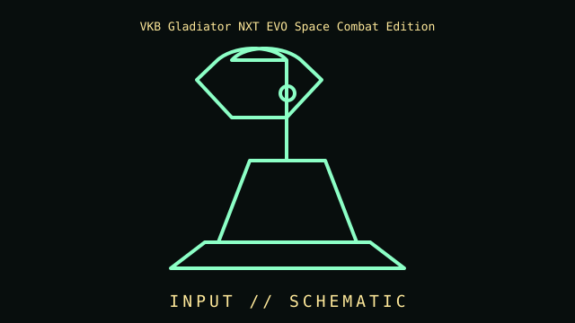

[ INDIVIDUAL COMPONENT // INPUT DEVICES ]
VKB Gladiator NXT EVO Space Combat Edition
PC USB flight stick with contactless sensing, twist axis, clutch adjustment, and programmable controls. This entry identifies this product generation and distinguishes important interface and revision differences.

MODEL IDENTIFICATION: Check the label for the complete model, revision, regional SKU, accessories, and current manufacturer documentation before installation.
Specifications
| Catalog subcategory | Joystick controllers |
|---|---|
| Catalog identity | VKB Gladiator NXT EVO Space Combat Edition |
| Era / family | USB flight-simulation joystick, Gladiator NXT EVO |
| Product-specific features | Desktop stick with twist/rudder axis, contactless magnetic sensing, adjustable dry clutch, and programmable grip controls; Space Combat grip differs from Premium grip. |
| Interface | Wired USB; enumerates as PC joystick/HID. VKBDevCfg and firmware provide advanced calibration, curves, and mapping. |
| Compatibility guidance | Designed for PC simulation software supporting USB joystick/HID input; not a console gamepad. Left/right-hand and grip editions affect layout and replacement compatibility. |
| Variants and service note | NXT EVO differs from original Gladiator NXT and Gladiator MK.II. Record grip version, handedness, firmware, and calibration. |
Installation & compatibility checks
- Record the exact model/revision, interface mode, receiver or cable identity, firmware, driver version, and supported host before testing.
- Check connector, power, protocol, OS/driver, and application support separately; physical connector fit alone does not establish feature compatibility.
- For wireless models, preserve original receivers and pairing data. Test wired and radio modes independently where both are provided.
- Do not infer performance from manufacturer maximums alone; note settings, application, host, and measurement method for measured results.
Model notes
NXT EVO differs from original Gladiator NXT and Gladiator MK.II. Record grip version, handedness, firmware, and calibration.
Designed for PC simulation software supporting USB joystick/HID input; not a console gamepad. Left/right-hand and grip editions affect layout and replacement compatibility.
Sources & further reading
- Manufacturer — VKB Gladiator NXT EVO Space Combat Edition product specificationsProduct reference; confirm exact variant and regional SKU.
- Manufacturer — VKB Gladiator NXT EVO Space Combat Edition support and manualsSupport reference for drivers, manuals, and revision-specific guidance.
Manufacturer model references are authoritative for exact revisions and regional variants. Specifications can differ by package, firmware, region, and driver generation.